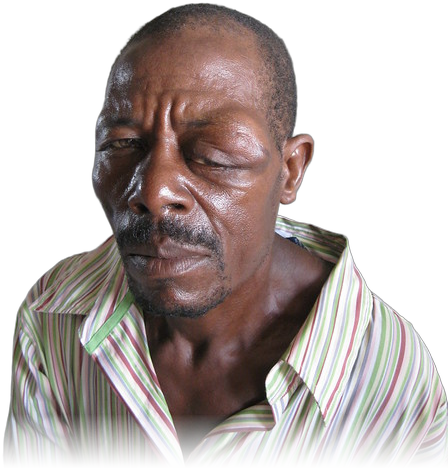
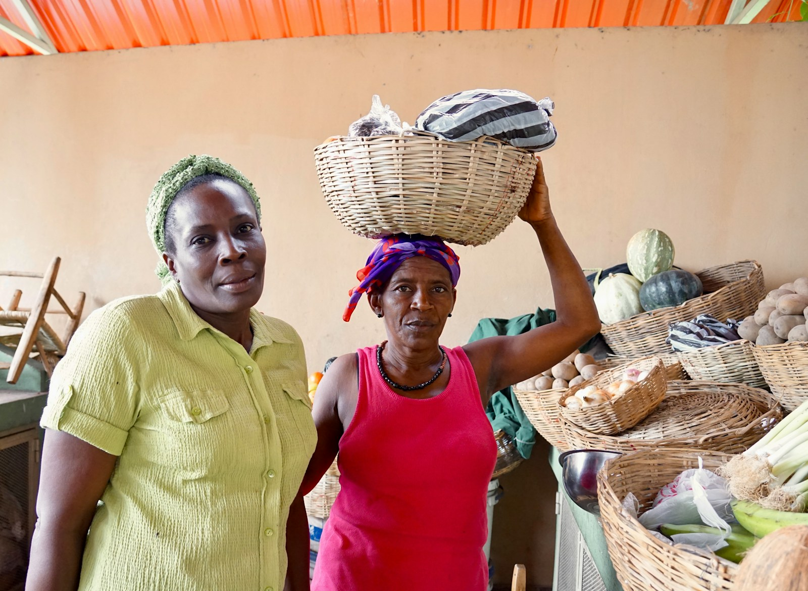

2 NOMS
CARTE D'IDENTITÉ
Nom
JOSEPH
Prénom
Jean-Joseph
Né le
12 / 03 / 1990
Ti Jo
UNE PERSONNE
1
NOM
REC
00:00:00:00
HAÏTI · TI NON
TI NON
Ti Jo
Bòbòt
Black Indien
Fanfan
Choupèt
ENFANCE

Ti Jo
À VIE
SURNOM D'ENFANCE
ORIGINE
Prénom court
Jean-Joseph → Ti Jo
Physique
Black Indien
Manie
…
Histoire
…
UN SURNOM · UNE HISTOIRE
KARTYE

FANFAN !
MARCHÉ
· ÉCOLE
· QUARTIER
CŒUR
CARTE D'IDENTITÉ
Prénom
Jean-Joseph
ti non
Mon ti non :
Répondez ici
CULTURE D'HAÏTI · TI NON